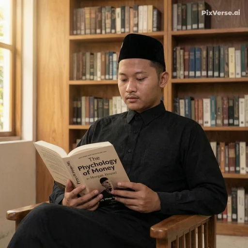
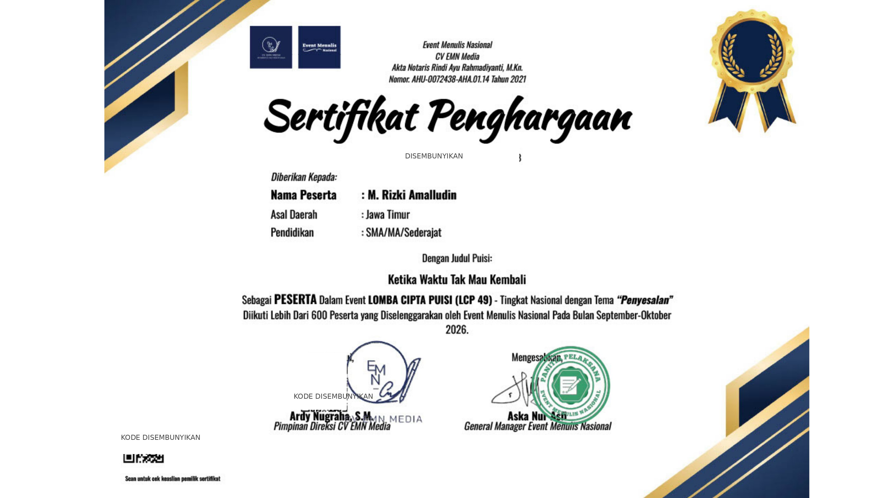

PLATFORM DIGITALDalam pengembangan
BantuDunia
Gagasan platform digital yang mengumpulkan berbagai alat dan layanan bermanfaat dalam satu tempat, dengan perhatian pada aksesibilitas dan kebutuhan pengguna yang beragam.
Kunjungi proyekPROFIL PRIBADI
Pelajar · Tertarik pada teknologi dan AI
Saya tertarik mempelajari teknologi, kecerdasan buatan, bisnis, ekonomi, pertanian, dan pengembangan proyek digital.

M. Rizki Amalludin
PERKENALAN
Saya seorang pelajar yang senang mempelajari hal baru dan mencoba menuangkan ide menjadi sesuatu yang nyata. Saat ini, ketertarikan saya banyak berada di bidang teknologi, AI, dan proyek digital.
Website ini menjadi tempat untuk memperkenalkan diri dan mendokumentasikan hal-hal yang memang sedang saya pelajari atau kerjakan. Isinya akan diperbarui seiring perkembangan saya.
KARYA
Gagasan platform digital yang mengumpulkan berbagai alat dan layanan bermanfaat dalam satu tempat, dengan perhatian pada aksesibilitas dan kebutuhan pengguna yang beragam.
Kunjungi proyekProyek lain akan ditambahkan setelah memiliki hasil yang siap dipublikasikan, dokumentasi yang jelas, dan tautan yang dapat diakses.
PROSES
FOKUS SAAT INI
Saya sedang memperluas pemahaman di bidang teknologi, AI, pemrograman, bisnis, ekonomi, dan pertanian. Catatan perkembangan akan ditambahkan berdasarkan pengalaman nyata.
HAL YANG SAYA MINATI
Mempelajari perkembangan teknologi dan kecerdasan buatan.
Mengeksplorasi ide dan proses pembuatan website atau produk digital.
Mempelajari cara kerja bisnis dan kegiatan ekonomi.
Memiliki ketertarikan pada bidang pertanian.
PENGHARGAAN & PARTISIPASI
“Ketika Waktu Tak Mau Kembali”
Mengikuti Event Menulis Nasional dengan tema “Penyesalan”, diselenggarakan pada periode September–Oktober 2026. Sertifikat mencantumkan lebih dari 600 peserta.
Sertifikat penghargaan telah diterima. Informasi ditampilkan sesuai keterangan pada dokumen.

KONTAK
Kamu dapat menghubungi atau menemukan saya melalui tautan berikut.